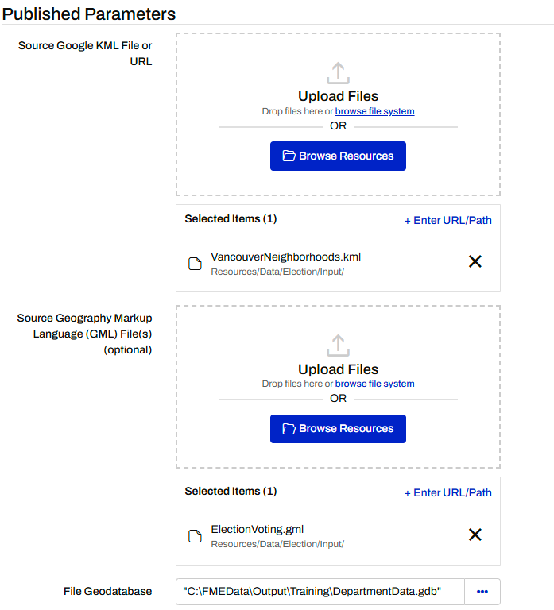
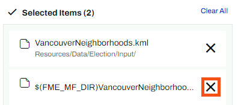
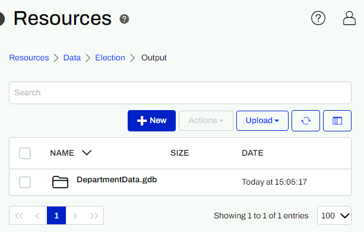
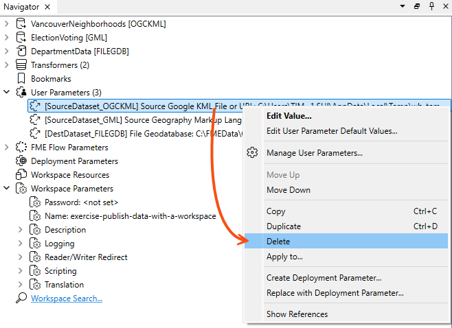
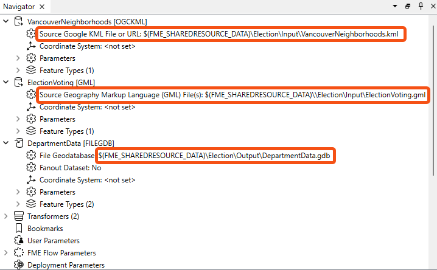

After completing this lesson, you’ll be able to:
You have already created a workspace to translate data and published it to FME Flow, both with data and using data uploaded temporarily.
However, such data management tools are not particularly suited to a long-term project, so the task here is to upgrade workspaces to use datasets stored in a Resources folder. There we can store source data and write destination data.
Log in to the FME Flow web interface using an administrator account (admin/FMElearnings on Safe Software training machines). Click Resources on the side menu bar to navigate to the resources management pages.
In most cases, data should be stored under the Data folder, so click on Data on the Resources page to open that folder. To avoid mixing datasets, our data should go into its own subfolder. So click on the +New button and create a folder called Election:
Next, click on the Election folder, and then create new subfolders called Input and Output:
Browse to the Input folder, click the Upload button, and select Files. Download the files below (right-click > Save link as...) and then upload them as the source datasets for the current translation:
So we now have both source datasets and a folder to write the output data to.
Select the starting workspace (C:\FMEData\Workspaces\CreateDataIntegrationApps\exercise-publish-data-with-a-workspace.fmwt) from the Run Workspace page in FME Flow. This workspace was published in the last exercise.
If you haven't completed the last exercise you'll need to publish the workspace to FME Flow. Do not upload data unless you have not completed the previous exercises. Register the workspace against the Job Submitter service.
Return to the FME Flow web interface. Locate the workspace under the Run Workspace dialog.

For each file, click the Browse Resources button, browse to the Input subfolder in Resources, and select/set the file location.
Be sure to remove the old dataset path by clicking the X next to it; you should only provide one dataset for each parameter:

Since the Geodatabase does not exist yet, you'll need to type the file name manually for the Geodatabase output location:
$(FME_SHAREDRESOURCE_DATA)/Election/Output/DepartmentData.gdb
Once you have set all three parameter paths, click Run.
When the workspace finishes, you should be see a completed Geodatabase file in the folder Resources\Data\Election\Output:

Although the workspace ran correctly and used the data in the resources folder, that's only because we selected that data at runtime. It is not a permanent feature of the workspace.
It would be much better if we designed the workspace to look into the resources folders automatically.
So, return to the workspace in FME Workbench.
If we set the workspace to read from the resources folders, we don't want to give users the chance to change that. So in the Navigator window, locate the three parameters for source and destination datasets and delete them:

Now, locate the source and destination dataset parameters for the two readers and one writer. Double-click each and change them to:
| KML Reader | $(FME_SHAREDRESOURCE_DATA)\Election\Input\VancouverNeighborhoods.kml |
| GML Reader | $(FME_SHAREDRESOURCE_DATA)\Election\Input\ElectionVoting.gml |
| Geodatabase Writer | $(FME_SHAREDRESOURCE_DATA)\Election\Output\DepartmentData.gdb |

Save the workspace and publish it back to FME Flow.
If you try running this workspace in FME Workbench now that you've updated the dataset parameters to use the FME Flow Shared Resource parameter, you will get an error because Workbench won't recognize that FME Flow parameter.
If you still want to be able to test this workspace in Workbench, you can set a value for the FME_SHAREDRESOURCE_DATA parameter. Configure it to point to a local file path that matches the folder structure used on FME Flow. The workspace will still run on FME Flow as Flow will automatically override any value for that parameter and replace it with the correct path.
Now run the workspace on FME Flow. This time you will not be prompted with a parameter to select the source (or destination) datasets, but they will be used from the resources folders just the same.